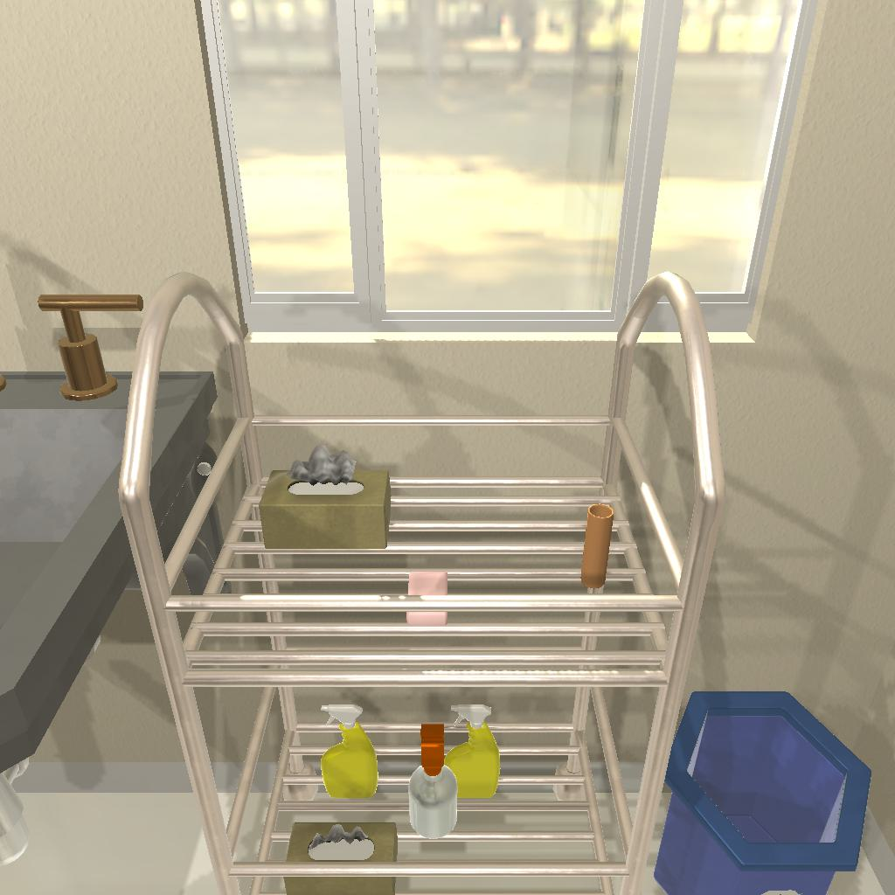

---------------------------------------------------------task: 28---------------------------------------------------------
--------------------------------------------------------------------------------------------------------------------------------------------------------------------
--------------------------------------------------------------------------------------------------------------------------------------------------------------------
Step:--------------------------------------------------------------------------14-------------------------------------------------------------------------------
----------------------------------------
VLM Prompt:
Image1:
Image2:
Image3:
**Instruction**
1. Analyze the provided images to identify all visible household objects and compare the difference between images (e.h. whether the object is opened or not and taken on hand or not), focusing on those relevant to the task description "put two spraybottle in toilet."
2. Use the analysis of images and the task hint "The agent must find an object of the desired type, pick it up, find the correct location to place it, put it down there, then look for another object of the desired type, pick it up, return to previous location, and put it down there with the other object." to answer the question: what is the most reasonable action in the choices for the task description "put two spraybottle in toilet"?
3. Decide and write the answer using the template: The answer is: (i): , where i is the real number. If there is no desired object in images, search every place based on **Initial Observation** to find the object. And if no one is exactly correct, choose a similar answer.
**Initial Observation**
You are in the middle of a room. Looking quickly around you, you can see bathtub (1), bathtubbasin (1), cart (1), sink (1), garbagecan (1), sinkbasin (1), countertop (1), drawer (1-4), toilet (1), toiletpaperhanger (1)
**Answer Choices**
(1): go to bathtub 1
(2): go to bathtubbasin 1
(3): go to sink 1
(4): go to garbagecan 1
(5): go to sinkbasin 1
(6): go to countertop 1
(7): go to drawer 1
(8): go to drawer 2
(9): go to drawer 3
(10): go to drawer 4
(11): go to toilet 1
(12): go to toiletpaperhanger 1
(13): put spraybottle 2 in/on cart 1
(14): examine spraybottle 2
(15): examine cart 1
**Answer**
Let's think step by step by following the instructions.
----------------------------------------
----------------------------------------
Original Response:
First, we analyze the images provided:
- Image 1 shows a countertop with various items, including a toilet paper roll and a candle, but no spray bottles.
- Image 2 shows a cart with various items, including a green box with a candle, soap bottles, and a brown cylinder object, but no spray bottles.
- Image 3 shows the same cart with a large yellow spray bottle now visible, being held.
From the initial observation, we know there is a cart in the room. Since the yellow spray bottle is visible in Image 3 and there is no other spray bottle visible in the images, we can infer that the agent is currently holding the spray bottle and is near the cart.
The task description is "put two spraybottle in toilet." The agent is currently holding one spray bottle and needs to find another one. Since we don't see another spray bottle in the images, the agent should search the locations that haven't been checked yet. The cart has been checked, and the toilet is the final location where the bottles need to be placed, not where they would be found.
Therefore, the most reasonable action for the agent to take next would be to search the drawers, as these are common places where additional spray bottles might be stored.
The answer is: (7): go to drawer 1
----------------------------------------
----------------------------------------
>>> Refine Original VLM Response and Get Pure Action: go to drawer 1
----------------------------------------
-----------------------------------------------------------------
Running time: 29.806021690368652 seconds
Total Money: 17.955399999999987
-----------------------------------------------------------------
-----------------------------------------------------------------
Text Observation:You arrive at loc 7. The drawer 1 is open. On the drawer 1, you see a tissuebox 1, a toiletpaper 1, a handtowel 1, and a candle 1.
-----------------------------------------------------------------
UNSUCCEED